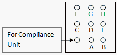
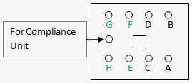

Service History
Subject: NS-7000 upgrade from 4 sites to 8 sites
Handler Model: NS-7000
Controller: RC520
Date: 16 May 2007
Items Required
- 1 piece of Air Regulator (for Counter Air)
- 2 sets of vacuum units
- 3 pieces of Remote I/O modules in a pack
- 1 uniwire set
- 4 M4x8 bolts
- 3 pieces of rectangle white spacer
- 3 pieces of manifold mounted on L shape plate
- air tubing 0.5m long of 8mm in diameter
- air tubing 0.5m long of 12mm in diameter
Action
1) Mount the above items to the handler eg. Counter Air Regulator for Arm 1&2 E, F, G & H.
2) Refer Picture 1, connect air tubings on the Rear-Right and Rear-Left above chamber
for Arm1 and Arm 2 air tubings to E, F, G, H.

Picture 1) Handler Rear-Right or Rear-Left above chamber
for Arm1 and Arm 2 air tubings to E, F, G, H

Picture 2) Top view inside chamber above Arm1 or Arm2
3) Power up handler
4) Reset the Remote I/O Board by press & hold for 3sec the white reset button
5) Launch C:\NS7000\exe\config.exe, select "Site Type" as 8 site.
6) In MMI, click Deviceset->Tester I/F, for tester Interface select "ADVAN 8site".
If "ADVAN 8site" cannot be found for GPIB, execute C:\NS7000\Tool\Loader.exe, and load the latest tester Hex file.
7) In MMI, use the I/O monitor to activate vacuum & counter air for Arm 1 and Arm 2 for checking 8 sites function.